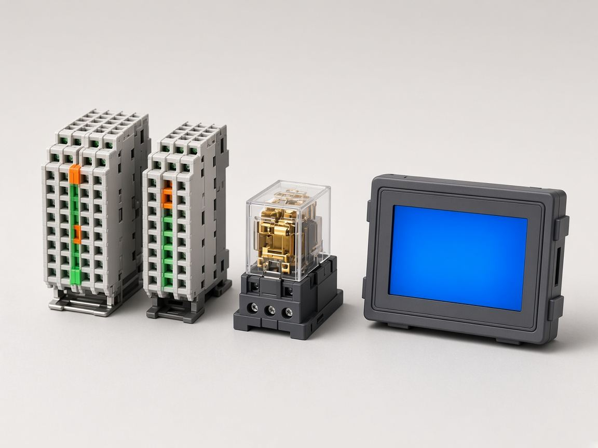

Автоматика · КИПиА · электрические компоненты
Компоненты промышленной автоматики из Китая
Подбираем датчики, энкодеры, электромагнитные клапаны, частотные преобразователи для электродвигателей, контакторы, изоляторы сигналов и интерфейсные модули по модели, параметрам или фотографии шильдика. Солнечные инверторы к этой странице не относятся.

Приоритетные позиции
Какие компоненты можно запросить
Высокоточные и критичные для производства позиции размещены в начале списка. Подбор выполняется по техническим данным, а совместимость согласуется до заказа.
Датчики, энкодеры и интерфейсы
- Промышленные датчики и датчики температуры
- Фотоэлектрические, индуктивные и емкостные датчики
- Абсолютные и инкрементальные энкодеры
- Датчики давления, уровня, расхода и положения
- IO-Link и IFM-модули по конкретной модели
- Оптоизолированные преобразователи последовательного интерфейса
Управление и исполнительные устройства
- Электромагнитные и промышленные регулирующие клапаны
- Частотные преобразователи и сервоприводы
- AC/DC контакторы, реле и пускатели
- Изоляторы сигналов и преобразователи интерфейсов
- Промышленные контрольно-измерительные системы
- ПЛК, HMI, блоки питания и модули ввода-вывода
Русские поисковые формулировки
Популярные названия и варианты запроса
FAQ
Ответы по подбору автоматики
Какие данные нужны для подбора компонента автоматики?
Укажите производителя и модель, питание, входной и выходной сигнал, интерфейс, диапазон измерения, тип подключения, количество и город доставки. Фото шильдика и разъема снижает риск ошибки.
Можно ли подобрать замену снятому с производства модулю?
Да. Для проверки нужны полная модель, электрические параметры, распиновка, интерфейс, размеры и условия эксплуатации. Совместимость подтверждается до заказа.
Можно ли запросить конкретный международный бренд?
Да, по точной модели. Официальная авторизация бренда не заявляется без письменного подтверждения для конкретного заказа.
Нужен расчет по модели или BOM?
Отправьте список, фото или технические параметры. Мы уточним вопросы и подготовим коммерческое предложение.
Связанные направления